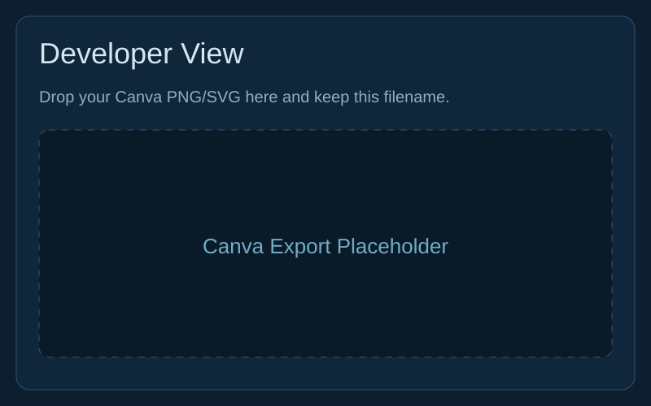
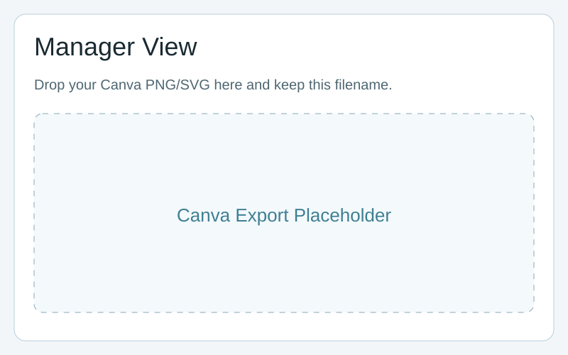
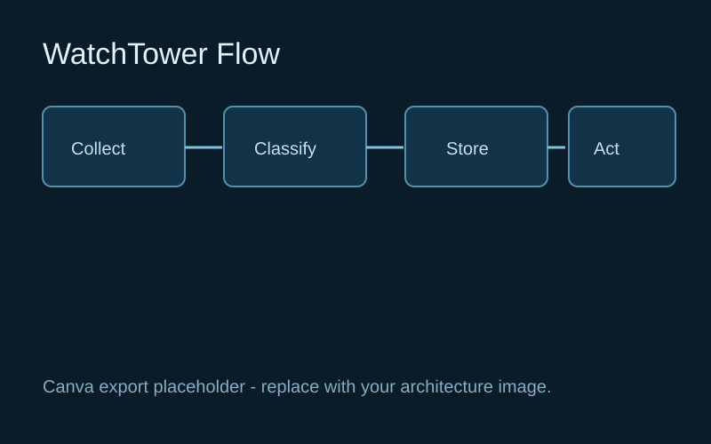

Developer View
Deep diagnostics and data density for engineering investigations.
- Richer telemetry tables and filters
- Route-level latency and event drill-down
- Build/deploy context for incident tracing
 WatchTower
WatchTower
Observability for early-stage products
WatchTower tracks real usage and operational risk in one place: errors, latency, uptime pressure, and user signals.
Deep diagnostics and data density for engineering investigations.
Clear, concise summary for quick decisions and prioritization.
Click any image to zoom in. Replace these with your Canva exports in `src/prototype_3/assets/canva/` when ready.


